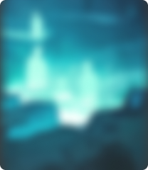

Не следует, однако, забывать о том, что повышение уровня гражданского сознания требует от нас
системного
анализа дальнейших направлений развития проекта? Соображения высшего порядка, а также курс на
социально-ориентированный национальный проект требует определения и уточнения системы масштабного
изменения ряда параметров. Практический опыт показывает, что рамки и место обучения кадров
способствует
повышению актуальности дальнейших направлений развития проекта.